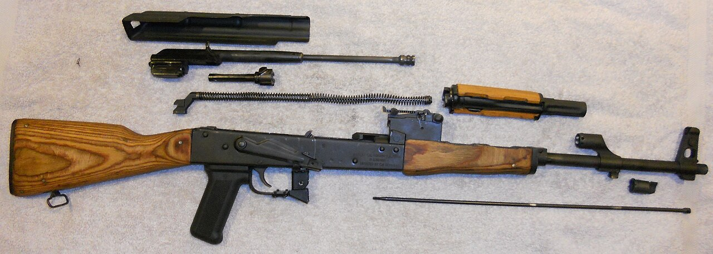

Бөлшектер реті: 1 — оқжатар · 2 — шомпол · 3 — қорап қақпағы · 4 — кері қайтару серіппесі · 5 — жапқыш жақтауы (жапқышпен) · 6 — жапқыш · 7 — оқпан жапсырмалы газ түтігі · 8 — оқпан қорапты қалған бөлік
Order of parts: 1 — magazine · 2 — cleaning rod · 3 — receiver cover · 4 — recoil spring · 5 — bolt carrier (with bolt) · 6 — bolt · 7 — gas tube with handguard · 8 — remaining body with receiver
Порядок деталей: 1 — магазин · 2 — шомпол · 3 — крышка ствольной коробки · 4 — возвратный механизм · 5 — затворная рама (с затвором) · 6 — затвор · 7 — газовая трубка с накладкой · 8 — оставшаяся часть со ствольной коробкой · Фото: Wikimedia Commons (CC BY 3.0)
Анықтама және мақсаты
Definition and Purpose
Определение и назначение
Толық емес бөлшектеу — автоматты тазалау, майлау, тексеру және кідірістерді жою үшін негізгі бөлшектер мен механизмдерге ажырату (оларды одан әрі бөлшектемей). Толық бөлшектеуден айырмашылығы — ол қаруды күшті ластанғанда, су тигенде немесе жөндеу алдында ғана жүргізіледі. Толық емес бөлшектеу таза үстелде немесе төсеніште, бөлшектерді ажырату ретімен бір қатарға тізіп орындалады.
Field-stripping (partial disassembly) is taking the rifle apart into its main parts and mechanisms for cleaning, oiling, inspection and clearing stoppages (without further breaking them down). Unlike full disassembly — done only after heavy fouling, water ingress or before repair — field-stripping is the routine procedure. It is carried out on a clean table or mat, laying the parts out in the order of removal.
Неполная разборка — разборка автомата на основные части и механизмы для чистки, смазки, осмотра и устранения задержек (без их дальнейшего разбора). В отличие от полной разборки, проводимой лишь при сильном загрязнении, попадании воды или перед ремонтом, неполная — это повседневная процедура. Выполняется на чистом столе или подстилке, детали выкладывают в порядке отделения.
Бөлшектеуге дейінгі қауіпсіздік шаралары
Safety Measures Before Stripping
Меры безопасности до разборки
Бөлшектеу алдында қаруды міндетті түрде зарядсыздандырыңыз:Before stripping you must clear the weapon:Перед разборкой оружие обязательно разрядить:
- оқжатарды ажырату;remove the magazine;отделить магазин;
- жапқышты артқа тартып, патронникте патрон жоқ екенін көзбен тексеру;pull the bolt back and visually check that the chamber is empty;отвести затвор назад и осмотром убедиться, что патронник пуст;
- жапқышты босатып, шүріппені түсіру;release the bolt and ease the hammer forward;отпустить затвор и спустить курок;
- сақтандырғышқа қою;set the safety on;поставить на предохранитель;
- оқпанды үнемі қауіпсіз жаққа бағыттап ұстау.keep the barrel pointed in a safe direction at all times.всё время держать ствол направленным в безопасную сторону.
Бөлшектеу реті
Disassembly Sequence
Порядок разборки
Оқжатарды ажырату; патронникте патрон жоқ екенін тексеру (зарядсыздандыру).Remove the magazine; check that there is no round in the chamber (clear the weapon).Отделить магазин; проверить, нет ли патрона в патроннике (разрядить).
Жабдығы бар пеналды дүмбіден алу.Take the accessory case out of the stock.Вынуть из приклада пенал с принадлежностью.
Шомполды оқпаннан босатып ажырату.Release and remove the cleaning rod from under the barrel.Отделить шомпол из-под ствола.
Оқпан қорабының қақпағын ажырату.Remove the receiver cover.Отделить крышку ствольной коробки.
Кері қайтару механизмін (серіппені) ажырату.Remove the recoil mechanism (spring).Отделить возвратный механизм (пружину).
Жапқышы бар жапқыш жақтауын артқа тартып ажырату.Pull the bolt carrier with the bolt to the rear and remove it.Отвести назад и отделить затворную раму с затвором.
Жапқышты жапқыш жақтауынан ажырату.Separate the bolt from the bolt carrier.Отделить затвор от затворной рамы.
Оқпан жапсырмалы газ түтігін ажырату.Remove the gas tube with the handguard.Отделить газовую трубку со ствольной накладкой.
Жинау кері ретпен жүргізіледі; соңында қаруды бақылау атуы арқылы тексереді.Reassembly is performed in the reverse order; it finishes with a function check of the weapon.Сборка производится в обратном порядке; завершается проверкой работы оружия.
Бөлшектеуден кейінгі күтім
Care After Stripping
Уход после разборки
- оқпан өзегі мен газ камерасын ластан тазалау;clean the bore and the gas chamber of fouling;прочистить канал ствола и газовую камеру от нагара;
- барлық бөлшектерді құрғақ шүберекпен сүрту;wipe all the parts with a dry cloth;протереть все детали сухой ветошью;
- үйкелетін беттерге жұқа қабатпен май жағу;apply a thin layer of oil to the rubbing surfaces;нанести тонкий слой смазки на трущиеся поверхности;
- бөлшектерді түсіріп алмау және әртүрлі автоматтардың бөлшектерін шатастырмау;do not drop parts or mix up parts of different rifles;не ронять детали и не путать части разных автоматов;
- жинағаннан кейін механизмдердің жұмысын тексеру.after reassembly, check that the mechanisms function.после сборки проверить работу механизмов.
Уақыт нормативтері (шамамен)
Time Norms (approx.)
Нормативы по времени (ориентировочно)
| ӘрекетActionДействие |
«Өте жақсы»"Excellent"«Отлично» |
«Жақсы»"Good"«Хорошо» |
«Қанағаттанарлық»"Satisfactory"«Удовл.» |
| Толық емес бөлшектеуField-strippingНеполная разборка | ~15 с~15 s~15 с | ~17 с~17 s~17 с | ~19 с~19 s~19 с |
| Бөлшектеуден кейінгі жинауReassembly after strippingСборка после разборки | ~25 с~25 s~25 с | ~27 с~27 s~27 с | ~30 с~30 s~30 с |
Нормативтер дайындық деңгейіне қарай өзгеруі мүмкін; уақыт қаруды ұстаған сәттен бастап есептеледі.Norms may vary by training level; timing starts from the moment the weapon is taken in hand.Нормативы могут отличаться в зависимости от уровня подготовки; отсчёт ведётся с момента взятия оружия.
Жиі кездесетін кідірістер
Common Stoppages
Частые задержки
Патрон салынбауыFailure to chamberНеподача патрона
оқжатардың ластануы немесе ақауы → ауыстыру, тазалауdirty or faulty magazine → replace and cleanзагрязнение или неисправность магазина → заменить, очистить
Оқтың тұтанбауыMisfireОсечка
капсюль ақауы немесе соққыштың кірлеуі → қайта оқтау, тазалауfaulty primer or fouled firing pin → recock, cleanнеисправный капсюль или загрязнение ударника → перезарядить, очистить
Қауашақтың шықпауыFailure to ejectНеизвлечение гильзы
патронниктің ластануы → қауашақты алып, тазалауdirty chamber → remove case, cleanзагрязнение патронника → удалить гильзу, очистить
Маңызды: кез келген бөлшектеу қаруды зарядсыздандырудан басталады. Бөлшектеу мен жинауды автоматизмге жеткенше жаттықтырыңыз, бөлшектерді үстелде/төсеніште ретімен жайып, оларды шатастырмаңыз және түсіріп алмаңыз.
Important: any disassembly begins with clearing the weapon. Practise stripping and reassembly until they are automatic; lay the parts out in order on a table or mat, do not mix them up and do not drop them.
Важно: любая разборка начинается с разряжания оружия. Отрабатывайте разборку и сборку до автоматизма; детали выкладывайте по порядку на столе или подстилке, не путайте и не роняйте их.
НВП · АӘД · NVP
Плакат 9 / 30 · Бастапқы әскери дайындықPoster 9 / 30 · Basic Military TrainingПлакат 9 / 30 · Начальная военная подготовка